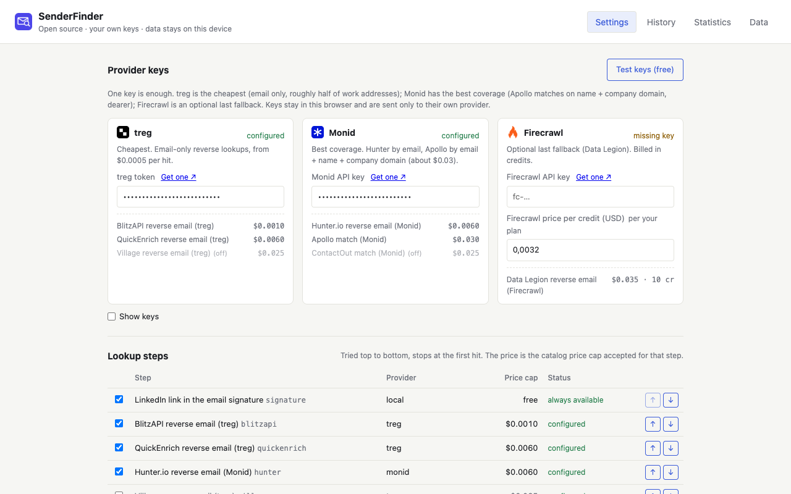
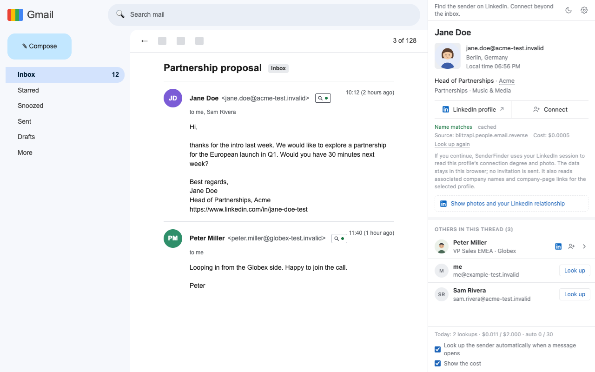

SenderFinder をインストール
Chrome ウェブストアまたは Microsoft Edge アドオンから SenderFinder をインストールし、以下の手順で設定してください。
デスクトップ版の Chrome、Edge などの Chromium 系ブラウザが必要です。モバイルアプリには拡張機能を追加できません。スクリーンショットは英語ですが、拡張機能自体はブラウザの言語設定に従います。
プライバシーの要点
- 貼り付けたキーは、この端末の拡張機能専用のストレージに保存され、検索の実行時にそのプロバイダーの API にのみ送信されます。
- 検索リクエストはブラウザーから設定したプロバイダーへ直接送信されます。検索経路に SenderFinder のサーバーはありません。匿名の利用統計は既定でオンで、設定からオフにできます。
- キーは設定でいつでも削除できます。キーがなければ有料の検索は実行できません。拡張機能をアンインストールすれば、そのストレージも削除されます。
3つの手順で SenderFinder を設定
-
1
キーを 1 つ取得して貼り付ける
インストール後に設定ページが自動的に開きます。Monid（Hunter、Apollo、ContactOut）または treg（BlitzAPI、QuickEnrich、Village）でキーを作成してください。Firecrawl は任意です。キーは 1 つで十分です。「プロバイダーのキー」に貼り付けてください。

初回インストール時の設定。上部がキー、下部がステップと価格。 -
2
「キーをテスト（無料）」を押す
確認は無料です。キーを検証し、プロバイダーの価格表を読み取ります。検索も課金も行われません。キーの横に「有効」と表示されれば成功です。
-
3
Gmail を開き、ツールバーのアイコンを 1 回クリックする
Gmail で任意のメールを開き、Chrome ツールバーの SenderFinder アイコンをクリックします。表示されない場合は、パズルピースのアイコンをクリックして SenderFinder をピン留めしてください。サイドパネルが開き、そのタブでは開いたままになります。以降は、読んでいるメールに追従します。

最初のクリック以降、パネルはこのタブで開いたままになります。
ストアからインストールした場合は自動更新されます。
どのキーを選べばよいですか
キーが 1 つあれば一連の流れは動作します。キーのないプロバイダーのステップは、エラーを出さずにスキップされます。この表は README にあるプロバイダー比較の要約です。
| キー | 実行されるステップ | 1 ヒットあたりの価格 | ベンチマークでのカバー率 | 向いている用途 |
|---|---|---|---|---|
| BlitzAPI → QuickEnrich（任意で Village） | $0.0005–0.005 | 仕事用アドレスのおよそ半分から 60 % | 予算重視、大量処理 | |
| Hunter → Apollo（任意で ContactOut） | $0.005–0.026 | Apollo は 19 回の呼び出しすべてに一致 | ヒット率 | |
| 両方 | チェーン全体：BlitzAPI → Hunter → QuickEnrich → Apollo | 平均 $0.011 / 件 | 48 / 50（96 %） | 既定。最も安いステップから始め、Apollo で最後に受け止める |
| Firecrawl （任意） | Data Legion のみ | 10 クレジット（≈ $0.008–0.032） | ヒット率のデータなし | 単独では非推奨、フォールバック専用 |
Apollo、Hunter、ContactOut は Monid 経由で、BlitzAPI、QuickEnrich、Village は treg 経由で呼び出されます。これらのデータソースの API キーを直接使っても、ここでは何も起きません。
うまくいかないときは
サイドパネルが開かない
まず SenderFinder をピン留めします。ツールバーのパズルピースのアイコン → ピン留め。そのうえで、Gmail のタブを開いた状態でアイコンを 1 回クリックしてください。パネルが自動で開くことはなく、タブごとに独立しています。
パネルに「キー未設定」と表示される
拡張機能の設定でキーを 1 つ貼り付けてください。1 つで十分です。キーのないプロバイダーのステップは、エラーなしでスキップされます。
Outlook で何も起きない
ウェブ版の Outlook はベストエフォートでの対応で、マークアップも頻繁に変わります。送信者の横に小さな印が出ない場合は、送信者行の HTML を添えて issue を作成してください。
gmail.com や info@ のアドレスが検索されない
個人用メールのドメインと役割アドレスは、プロフィールにつながることが少ないため既定でスキップされます。パネルには、そうしたアドレスを検索するための「それでも検索」ボタンがあります。
今日は誰も検索されなくなった
1 日の上限（既定は $2）か、自動検索の回数上限（1 日 30 回）に達しています。どちらも設定で変更でき、カウンターは翌日にリセットされます。
後から更新するには
ストアからインストールした場合は自動更新されます。